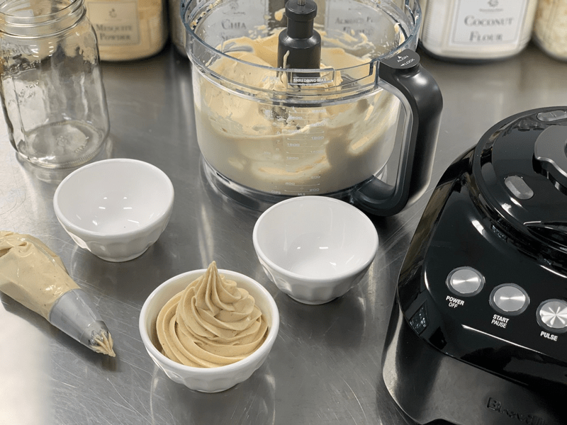

Instant Gratification Ice Cream (food processor/blender)
In a hurry? Short on patience? Need a quick dessert? Or perhaps you want to enjoy the taste of the “simple life.” If any or all of the above applies to you, then you came to the right place! Don’t discredit the simplicity of this method if you are a seasoned raw gourmet chef. Having options to fit the day to day demands is what it is all about.

This SIMPLE method can be elevated to gourmet just by adding some yummy chunky, funky ingredients. Whenever you make raw granola, cookies, cereal, or bars, save some batter off to the side and freeze it. When the time comes to make ice cream, pull it out and pinch off delicious nuggets and drop them into the ice cream. It will elevate the flavor and mouth texture experience. To make it even more sophisticated, drizzle some homemade raw chocolate or caramel sauce over the top or fold it into the mixture to make every bite sing with glee.
Equipment Needed
- Food Processor (fitted with “S” blade) or Blender
- Spatula
- Ingredients
I find that a food processor works the best. There is more surface for the ingredients to move around in, which leads to quicker blend times, and a colder dessert. A HIGH-POWDERED blender works if you don’t have a food processor, but it will take a tamper to keep pushing the ingredients down into the blades. If you don’t own a tamper, you will have to stop the machine often to scrape the side down, making sure to get all the ingredients down into the blades.
Banana Ice Cream
Banana ice cream is super simple to make. It can be enjoyed with ONE ingredient (bananas), or you can get as creative as you wish and add a whole host of ingredients to tailor it to your cravings.
Ripe Bananas Needed
- First off, we need ripe bananas. Bananas are sweeter when they are at their peak of ripeness.
- Using them in their sweetest state means that you typically don’t need to add any additional sweeteners.
- Look for bananas that have yellow skins adorned with brown polka dots. Make sure to cut out any bruises.
Frozen Bananas Required
- Bananas must be frozen solid first before making your banana-based ice cream.
- Peel and place on a cookie sheet, either whole or sliced. I freeze mine whole and break into chunks when adding to my food processor or blender.
- They should be frozen for at least 24 hours before use.
- It’s a great idea to keep a large bag of frozen bananas on hand at all times. Not only for banana ice cream, but you can also add them to smoothies.
Whipping Action Demanded!
- Place the chunks of banana into the food processor bowl that is fitted with the “S” blade. As you turn the machine on, things are going to bang around in the bowl, this is normal.
- Add 1/4 – 1/2 cup of water.
- Stop and scrape down the sides a few times through the process.
- It will go from chunks to lumps, to a creamy, soft-serve ice cream texture. Blend for a few more seconds to aerate the ice cream.
Add-ins
- If you wish to add any mix-ins, this is the moment to do it. How about trying…
- A spoonful of nut or seed butter
- Drizzle of honey
- A handful of raw chocolate chips
- A few almonds or other nuts
- Tablespoon of cacao powder
- 1/2 tsp cinnamon, cardamom, or ginger
Enjoyment – Your Reward!
- In my book, banana ice cream is meant to be enjoyed right away, soft-serve style.
- If you freeze it, plan on it getting very hard, and it will start to brown a bit.
Frozen Fruit Ice Cream
Frozen fruit when blended turns into creamy sorbet-like ice cream. I won’t go into detail on how to make it, because you will use the same techniques that you just learned about when making banana ice cream. But I will share some quick tips that pertain to other fruits.
- Use fresh ripe fruits. It is a great way to use up ripe fruit that you might not be able to eat in time.
- Chop the fruit into medium-sized pieces.
- Place the fruit pieces on a cookie tray in a single layer to prevent the fruit chunks from freezing into a ball.
- Freeze until solid, then transfer to a freezer-safe container, so it is ready for your frozen dessert cravings.
- Follow the same directions as above and enjoy!
© AmieSue.com